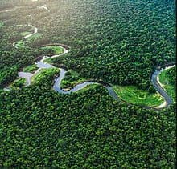

pagina principal
plantas en honduras
animales en honduras
parque nacinal la tigra
biosfera del rio platano
el rio platano tiene una longitud de unos 100 kilometros y se encuentra localizado en el departamento de gracias a Dios en honduras. la reserva corresponde a un sentido amplio con base a las categorias de zona, al bosque tropical humedo conteniendo areas marino-costeras importantes y una variedad de habitads ricos en biodivercidad, que icluyen extensos manglares, sinembargo la mayor parte del rio platano esta cubierto por bosque lluvioso. el rio sirve de refugio y fuente de agua y alimento para la gran dibercidad de plantas y animales en la zonan, asi como tambien mas de 2000 indigenas de la zona. el rio platano tiene la mayor biodiversidad del pais. en sus bosque se encuentran arboles como la caoba el laurel, la caraa y el pino, se han identificado mas de 568 especies de plantas, en los cuales 23 de estas se reportan como nuevas en el registro de la flor de honduras.
la reserva de la biosfera del rio platano se encuentra localizada en lo alrededores del rio platano en la mosquitia, la region caribeña de honduras, posee una extencion de 9,871 kilometros cuadrados y abarca tanto montañas como tierras bajas de selva tropical con una gran biodibercidad.
